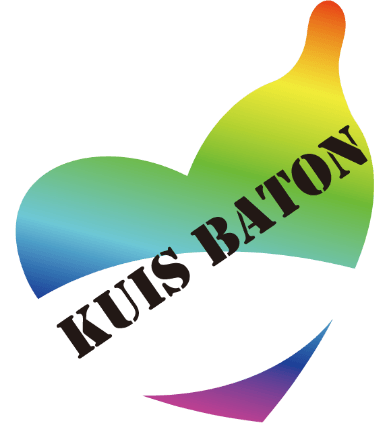

力を合わせて、
HIV/エイズの連鎖を断ち切る
近年、HIV/エイズに関わる取り組みは大きく進展し、治療法も検査体制も格段に進歩してきた。しかし、HIV/エイズに関する知識はまだ十分でなく、偏見もなくなっていない。
エイズの最大の感染経路は性行為で、新規感染者は20代～30代が最多である。感染拡大を防ぐには、「強い意志をもって、自分自身とパートナーを守る」という個々人の決意と実行が不可欠である。

ロゴ・イラスト:福原聖人
、自分たちの意識の向上と仲間の啓発をめざして、和田ゼミ起業研究会を主体とした「KUIS BATON PROJECT」がスタートした。「自らHIV/エイズの連鎖を断ち切る」意思を人から人ヘと「バトン(BATON)」のように渡し合い、人と人との新たな連帯をつむぎだすことがめざされていた。

HIV/エイズをタブー視せずに
語り合う
日本では性に関わる問題をまだまだタブー視する傾向がある。パートナーや友達と気軽に話せず、どうしても蓋をしてしまいやすい。どうしたら、HIV/エイズに対する偏見や性に関わる心の壁を取りはらい、自らが当事者であるという意識にたどり着けるのか。バトン・プロジェクトでは、このセンシティブなテーマを「愛する、守る、団結する」というプラスのイメージに転化する新しい流れを打ち出そうとしてきた。

重要な場となったのは、毎年 の「世界エイズデー」である。このモメンタムにあわせて、講演会、啓発リーフレットとコンドームの配布、Red Ribbonイルミネーション、学内施設をシンボルカラーの赤色に染める「レッドジャック」、合唱祭など、全学を巻き込む様々な企画が実行されてきた。
Light Up! Stand Up for AIDS!
~ともに巨大レッドリボンを作ろう~

意思表示の「バトン」を
タンブラーに託して
からは学内で「KUIS BATONタンブラー」も販売した。卓上に置かれたタンブラーのメッセージをきっかけに、HIV/エイズ の連鎖を断ち切る決意を日々新たにし、仲間にも伝える「バトン」として、日常生活のなかにStop AIDS!を浸透させるためである。
タンブラーには、エイズに関する正しい知識と世界の現状への理解を促進し、気軽に検査を受けに行くための案内を含めたリ一フレットを添付し、売上げの一部はエイズ予防活動に取り組むNPOに寄付した。